A mountain-lover's route through three countries. Lake Geneva and Glacier 3000, the Matterhorn from Zermatt, the Jungfraujoch glacier from Interlaken, Mount Rigi above Lucerne, and the old towns of Bern and Zurich, all by train on the Swiss Travel Pass. A rental car then takes you through the Tyrol to Innsbruck, Lake Königssee, Salzburg and Neuschwanstein Castle before Munich. We changed the original Austria days, which put Innsbruck, Swarovski and Hallstatt in one day: Hallstatt is about 3 hours from Innsbruck each way, not 1 hour 30 minutes, and Königssee is about 2 hours 15 minutes away. You now drive from Innsbruck to Königssee and sleep in Salzburg, and visit Neuschwanstein as a day out from Munich.
See it for yourself
Photos from the journey
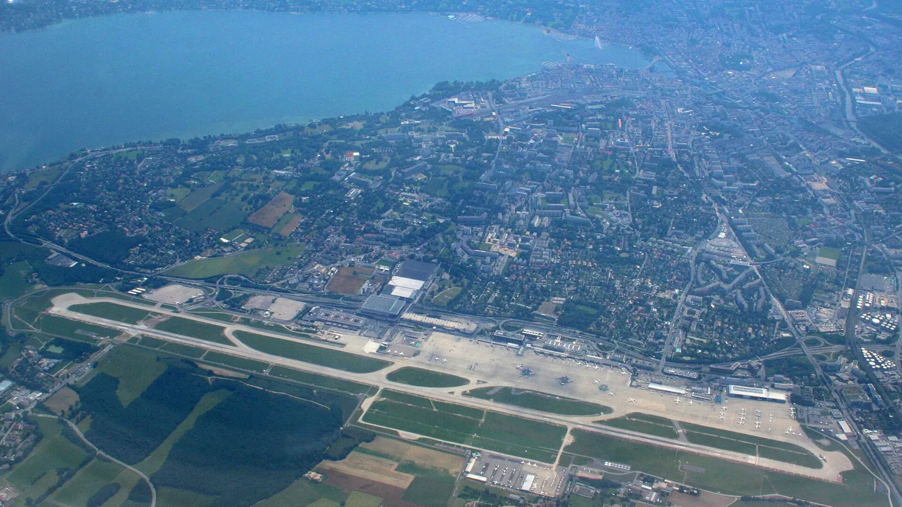
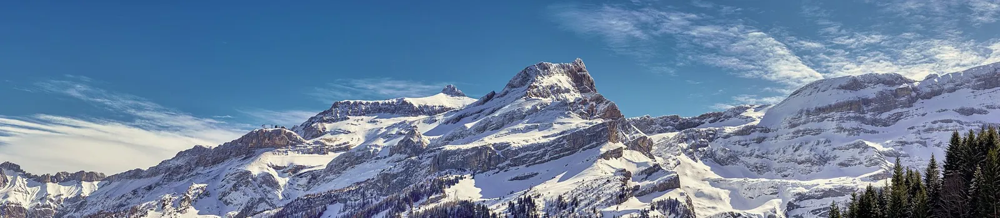

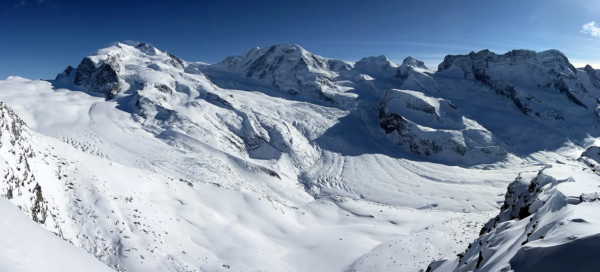
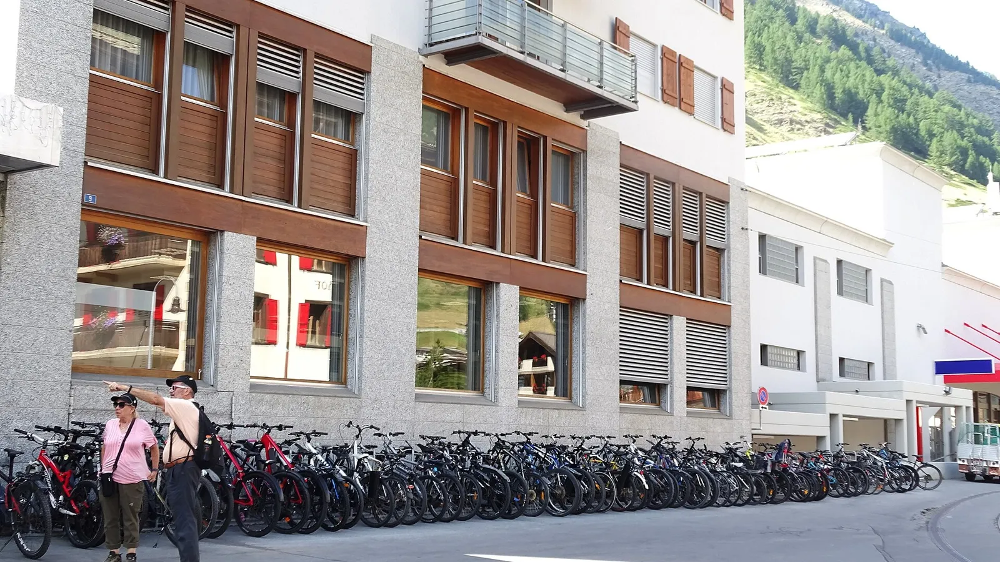

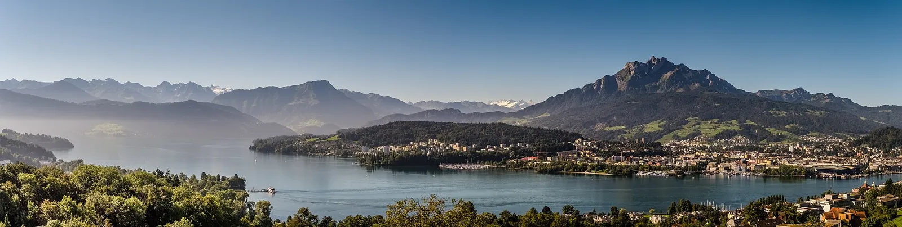
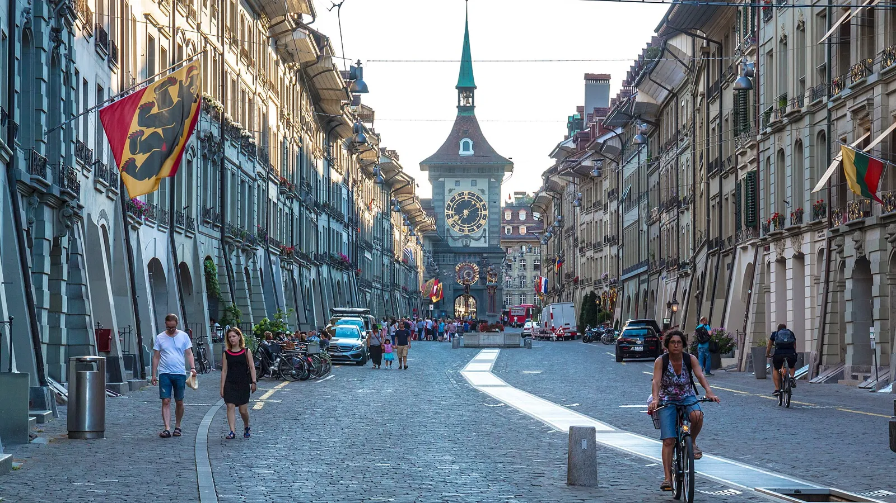
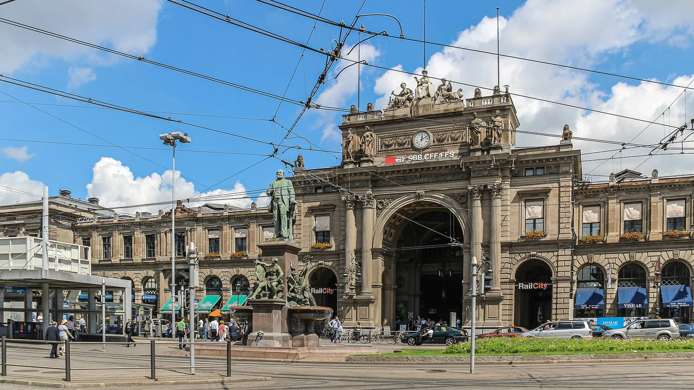

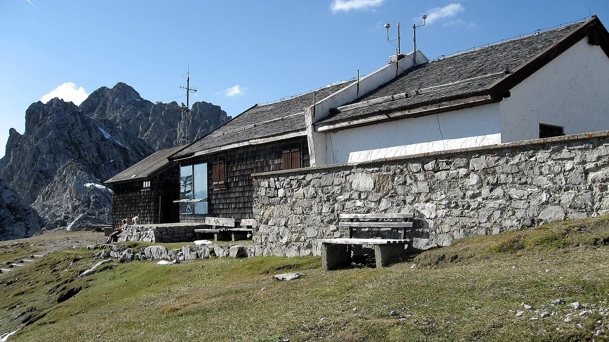
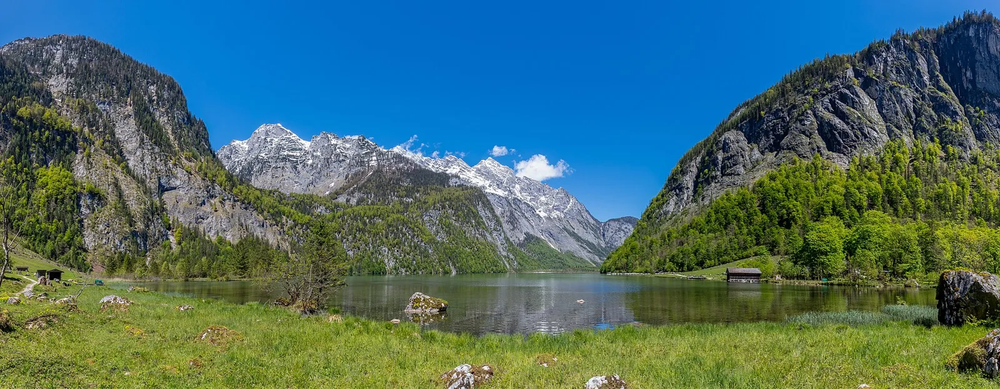
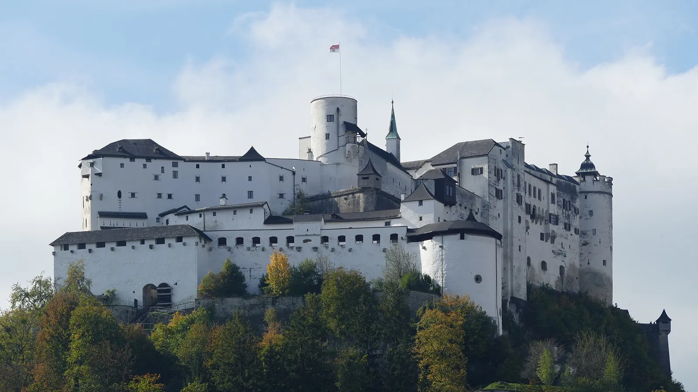
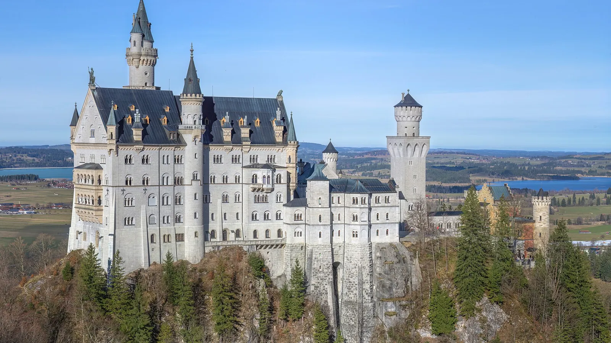

Where you go
The journey on one map
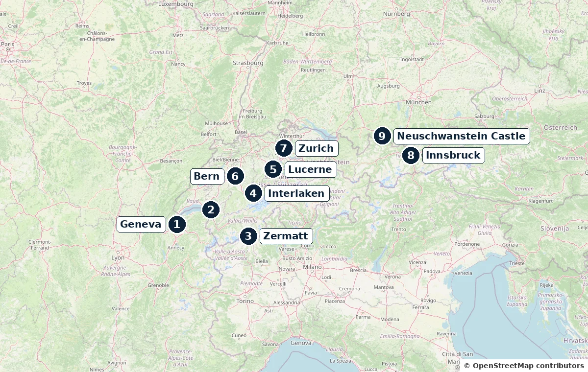
GenevaMontreuxZermattInterlakenLucerneBernZurichInnsbruckKönigsseeSalzburgMunichNeuschwanstein Castle
Day by day, in short
Daily travel brief
Distances are by road for the whole day. The full plan with timings comes with your detailed itinerary.
-
1
Arrive in Geneva and train to Montreux
- Train to Montreux: activate the Swiss Travel Pass in the app on the first day you use it.
- Keep the first evening easy after the long flight.
-
2
Glacier 3000, Gstaad and Charlie Chaplin's World
- Glacier 3000: it is about 5°C at the top.
- A private driver makes this day easy; by public transport it needs four changes.
-
3
Chillon Castle, then train to Zermatt
- Train via Visp to Zermatt: zermatt is car-free.
- Send big suitcases ahead by Swiss rail luggage service if you prefer to travel light.
-
4
Gornergrat and the Matterhorn
- Gornergrat railway: the Swiss Travel Pass gives 50% off.
- Matterhorn Glacier Paradise: altitude is felt here.
- Matterhorn Glacier Paradise: around 0°C at the top even in July.
-
5
To Interlaken and sunset at Harder Kulm
- Book tomorrow's Jungfraujoch seats now if not already done.
-
6
Jungfraujoch, the Top of Europe, and Lake Thun
- Jungfraujoch at 3,454 m: book seat reservations weeks ahead for July and August.
- Jungfraujoch at 3,454 m: altitude may cause a headache.
-
7
-
8
Day trip to Bern
- Bern's Parliament building offers free tours on some days; ask us to check.
-
9
Zurich at leisure
- Hiltl, near Bahnhofstrasse, is the world's oldest vegetarian restaurant (since 1898).
-
10
Train to Innsbruck and pick up your car
- Railjet from Zurich to Innsbruck: not covered by the Swiss Travel Pass; we book the tickets.
- Your hotel should have parking; book it with the room.
-
11
Nordkette, the Golden Roof and Swarovski
- A relaxed day after the original plan's 6-hour drive to Hallstatt and back.
-
12
Lake Königssee, then Salzburg
- Electric boat to St Bartholomä: arrive before 14:00; queues are long in July and August.
- Optional: the Sound of Music tour or Hallstatt (1 hour 15 minutes from Salzburg) if you add a night here.
-
13
-
14
Neuschwanstein Castle
- Neuschwanstein and Marienbrücke: timed tickets sell out weeks ahead in summer.
- The walk up to the castle is about 40 minutes uphill; buses and horse carts help.
-
15
Fly home from Munich
- Drive to Munich Airport and return the car: allow 3 hours before an international flight, plus 30 minutes for the car return.
- Swiss chocolate and liquids go in checked baggage.
Local know-how
Travel hacks from our desk
Two currencies
Switzerland uses Swiss francs (CHF); Austria and Germany use euros. Cards are accepted almost everywhere, including mountain restaurants. Swiss prices are much higher than in Austria and Germany.
Swiss Travel Pass
Covers trains, buses and lake boats in Switzerland, with discounts of 25 to 50% on most mountain railways such as the Gornergrat and the Jungfraujoch.
Altitude and weather
Above 3,000 m, a mild headache and breathlessness are normal. Go up in the morning: afternoon thunderstorms between about 14:00 and 17:00 can stop cable cars. Use SPF 50 sunscreen.
Driving in Austria and Germany
Indian licence holders need an International Driving Permit. Austrian motorways need a digital vignette bought before you drive; Germany has none. Traffic drives on the right.
Hotel deposit
Use a credit card for the deposit or pre-authorisation at check-in, never a forex or debit card. Forex cards cannot hold funds, many hotels refuse them, and a credit-card hold is released faster.
Cards and cash
On card machines, always choose to pay in Swiss francs or euros, never in INR. Carry about CHF 50 and EUR 50 in cash for small kiosks and toilets.
Pickpockets
Busy stations, trams and squares are pickpocket hotspots. Keep passports in the hotel safe, carry a copy, and wear your bag in front in crowds.
Plugs, water and meal times
Plugs are the two round-pin type C and F at 230 volts (Switzerland uses type J; a type C plug fits). Tap water is safe to drink. Lunch is about 12:00 to 14:00 and dinner from about 18:30.
When to go
Best time to visit for this journey
Late June to early September.
June to September, when every mountain railway runs and the Alpine meadows flower. July evenings are light until about 21:30.
The package
What's included
Included
- 14 nights with breakfast
- 9-day Swiss Travel Pass
- Private car for the Glacier 3000 day
- Train Zurich to Innsbruck
- 7-seater rental car from Innsbruck to Munich Airport
- Jungfraujoch and Neuschwanstein reservations
- 24/7 support from Blue Diamond Voyage
Not included
- International flights
- Schengen visa
- Mountain railway and cable car costs beyond the pass discount
- Fuel, vignette, parking and tolls
- Lunches and dinners
- Travel insurance
- City taxes paid at hotels
The detailed itinerary
Some journeys are planned. Ours are crafted.
The full 15-day plan is ready: hour-by-hour timings, drive times, temple dress codes, food for your diet and a route map for every day. Tell us your dates and your city, and we'll send it to you on WhatsApp, shaped around you.
- Hour-by-hour timings
- A route map for every day
- Hotel and room details
- Visa and entry steps
- Vegetarian and Jain dining
24/7 travel desk+91 97148 59797+91 98242 21400
Photo and map credits
- Geneva Airport: Schutz, CC BY-SA 3.0, via Wikimedia Commons
- Glacier 3000: Axel Tschentscher, CC BY-SA 4.0, via Wikimedia Commons
- Chillon Castle: Giles Laurent, CC BY-SA 4.0, via Wikimedia Commons
- Gornergrat: Tobi 87, CC BY-SA 3.0, via Wikimedia Commons
- Zermatt railway station: Abxbay, CC BY-SA 4.0, via Wikimedia Commons
- Jungfraujoch: Ank Kumar, CC BY-SA 4.0, via Wikimedia Commons
- Lucerne: Ermell, CC BY-SA 4.0, via Wikimedia Commons
- Zytglogge: Dmitry A. Mottl, CC BY-SA 4.0, via Wikimedia Commons
- Zurich HB: Dietmar Rabich, CC BY-SA 4.0, via Wikimedia Commons
- Zurich HB: Dietmar Rabich, CC BY-SA 4.0, via Wikimedia Commons
- Hafelekar: Mathias Bigge, CC BY-SA 3.0, via Wikimedia Commons
- Königssee: Diego Delso, CC BY-SA 4.0, via Wikimedia Commons
- Hohensalzburg Fortress: Andreas Stiasny, CC BY-SA 4.0, via Wikimedia Commons
- Neuschwanstein Castle: Wilfredor, CC0, via Wikimedia Commons
- Munich Airport: Julian Herzog (Website), CC BY 4.0, via Wikimedia Commons
- Maps: © OpenStreetMap contributors; road routes by OSRM.